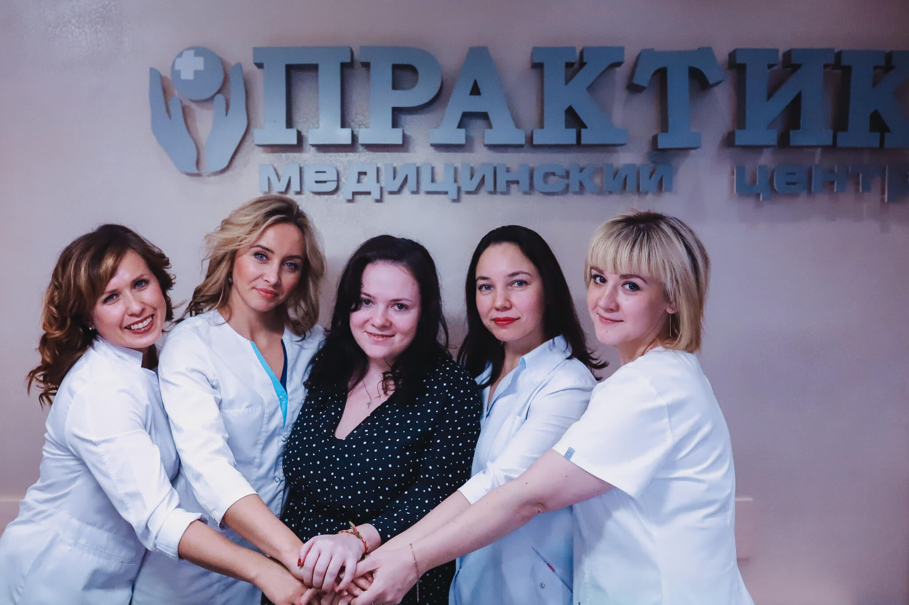

О клинике
Медицинский центр Практик – специализированное учреждение, созданное с целью поддержания, сохранения и восстановления женского и мужского здоровья. В клинике ведут прием опытные гинекологи, гинекологи-эндокринологи, акушеры, маммологи, андрологи, урологи, венерологи, дерматологи, трихологи, стоматологи, генетики, терапевты. Врачи клиники «Практик», поставив диагноз, назначают эффективное лечение с применением инновационных и консервативных методик.
В медицинском центре возможно медикаментозное, физиотерапевтическое и хирургическое лечение, в том числе нормализация гормонального фона женщины. Благодаря большому опыту и профессионализму сотрудников клиники обеспечивается избавление от тяжелых заболеваний с сохранением при этом детородной функции.
Врачами учреждения разработана комплексная программа ведения беременности «все включено», в которой участвуют врачи различных узких специализаций.
Акушеры и гинекологи наблюдают беременность, наступившую как естественным путем, так и в результате ЭКО. По показаниям и желанию проводятся интимные пластические операции после сложных и травматичных родов. В клинике проводят лечение всех гинекологических заболеваний с применением мини- и малоинвазивных тактик (в том числе прерывание беременности).
Современные методы диагностики (узи, биопсия, рвх, гистероскопия и проч.) позволяют ставить четкие диагнозы и назначать, а также корректировать лечение (инфекции, бесплодие, планирование беременности или проблемы нежелательной беременности).

В частности, врачи клиники «Практик» используют такие методы обследования:
- УЗИ на первоклассных аппаратах, с помощью которого оценивается состояние всех внутренних органов, сердца, сосудов.
- анализ крови определяет уровень различных гормонов, который указывает на причины тех или иных заболеваний;
- экспресс-диагностика методом ПЦР (полимерной цепной реакции) необходима для обнаружения возбудителей инфекций;
- кольпоскопия предполагает обследование входа и внутренней поверхности влагалища с использованием качественного цифрового оборудования;
- гистероскопия помогает дать оценку состояния полости матки с помощью специального оптического зонда;
- лапароскопические операции-диагностические и по удалению миом матки, кист;
- биопсия проводится для выявления раковых заболеваний.
В клинике имеется дневной стационар, что позволяет проводить различные хирургические операции, а также пластические операции (интимная пластика, лабиопластика, гименопластика).
Преимущества центра в наличие самого современного оснащения, новейших сертифицированных лечебных препаратов, широких возможностей и тщательным персональным наблюдением, сопровождением и реабилитация каждого пациента.